Varnish
Varnish
In the spirit of Turpentine!
Rosin from conifers is a remarkable material. It makes violing bows grip, solder flux, and
is a keycomponent of Faraday-Vax for high vacuum seals. The list goes on, but here I will
outline my proceduce for making varnish, as it stands currently. At the moment I'm experimenting
with oxide accelerants, and alternative solvents. In an attempt to reduce drying times
More on that in the furutre...
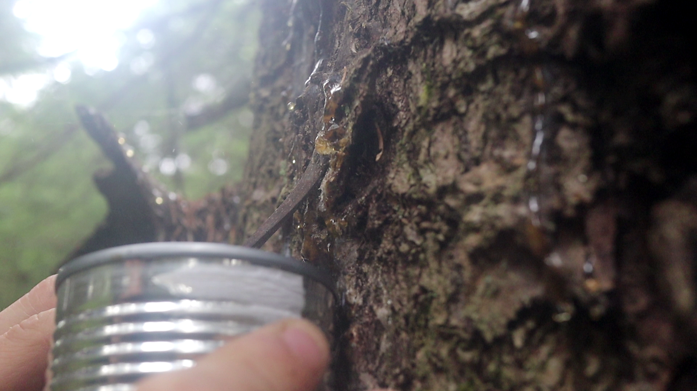Start by collecting some rosin. For a light varnish, care must be taken when collecting.
If too much debris, comes along with the rosnin, it will heat unevenly.
The rosin closest to the heat-source will then darken, while the rest is still melting.
I have no sources for why it darkens. But it may be similar to a Mailiard-reaction
but with Abietic acid doing the jobb of an amino-acid. Get me a FTIR-Spectrophotometer
and I'll figure it out.
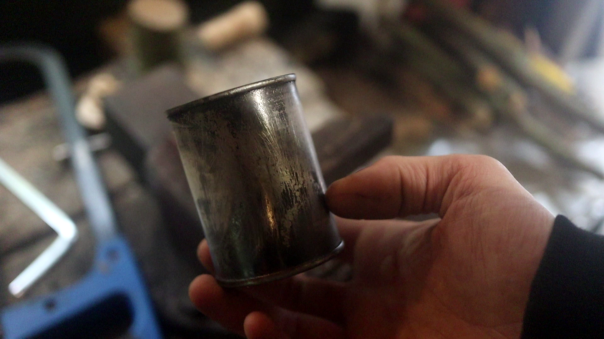Next take a small can, poke some holes for ventilation, and throw in a tealight
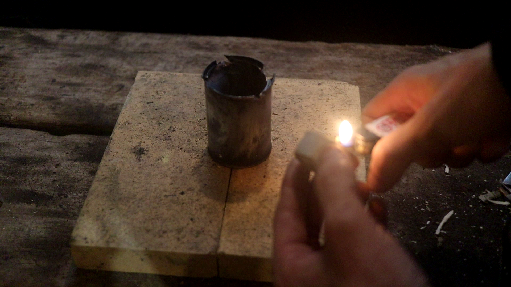Place the rosin on top in another can, and wait patiently. Remember to stir often.
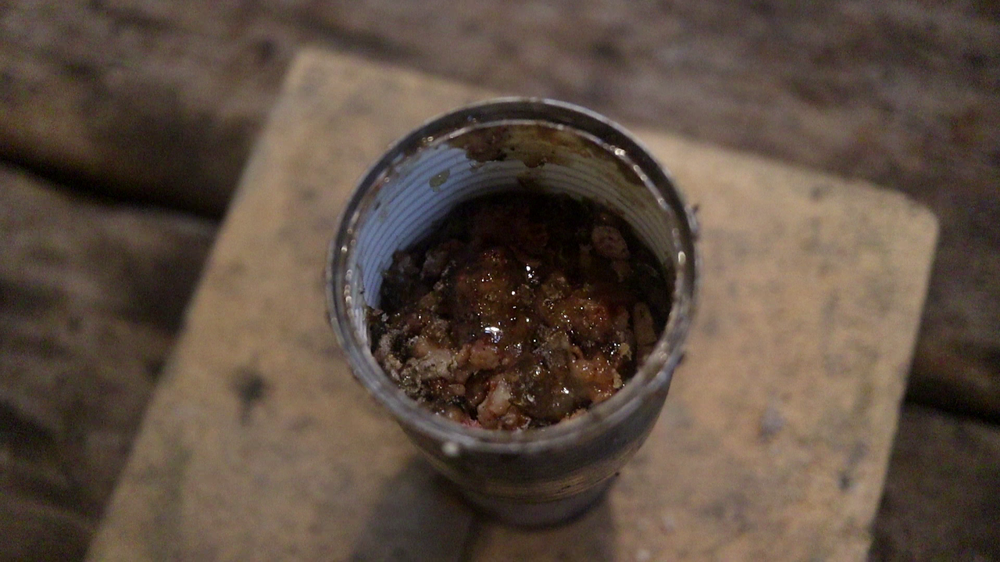 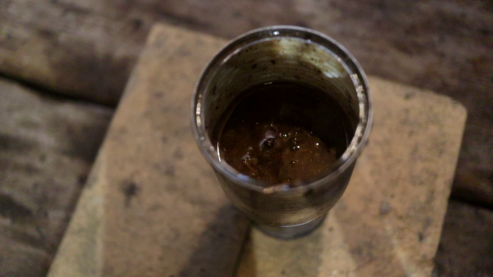After a while the rosin is fully melted, but still full of debris. We then strain the
rosin. I tend to use a heat-gun to keep it from solidifying on the mesh.
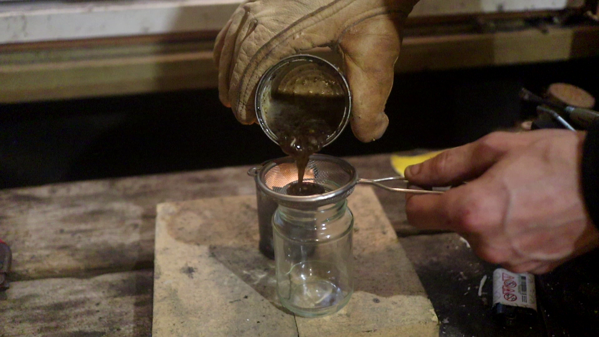The chunk of material that don't go through the sieve, make excellent fire starters.
But can otherwise be thrown away.
While the rosin is still hot, add 1/4 to 1/3 by volume, of boiled linseed-oil.
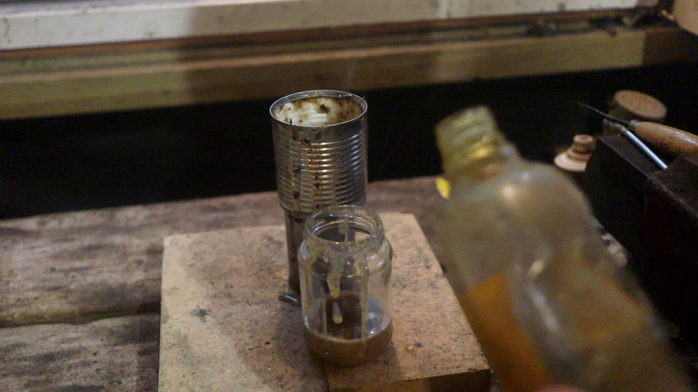Leave the mixture for at rest for at least 24h. Any remaining particulates will settle
to the bottom.
The mixture is then decanted over to a different jar. Leaving the debris in the first one.
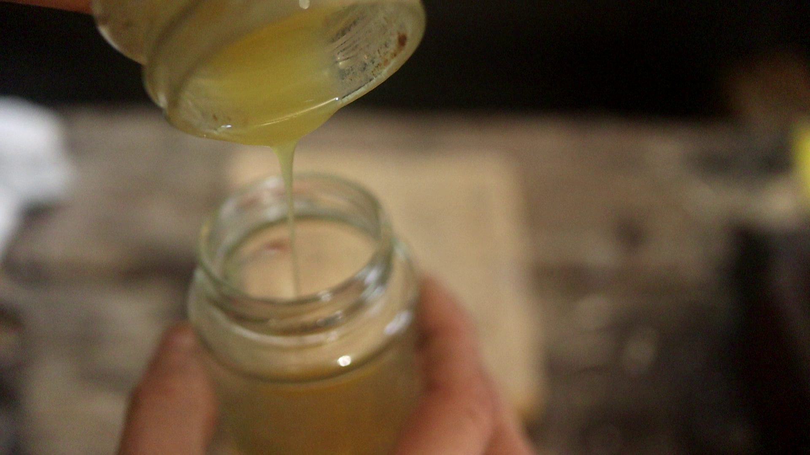It's then reheated, in order to boil of any water. You may have to add some boiling chips.
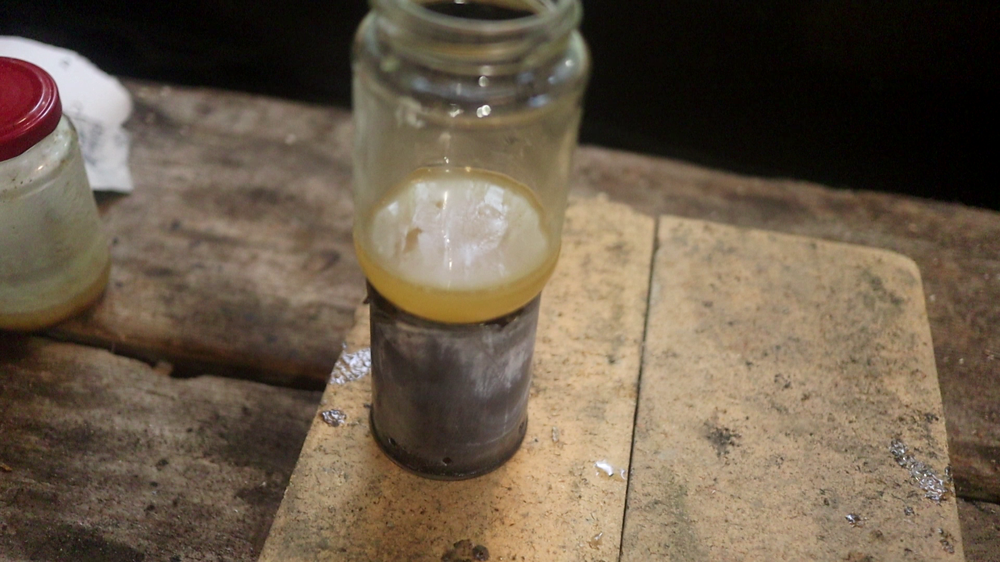 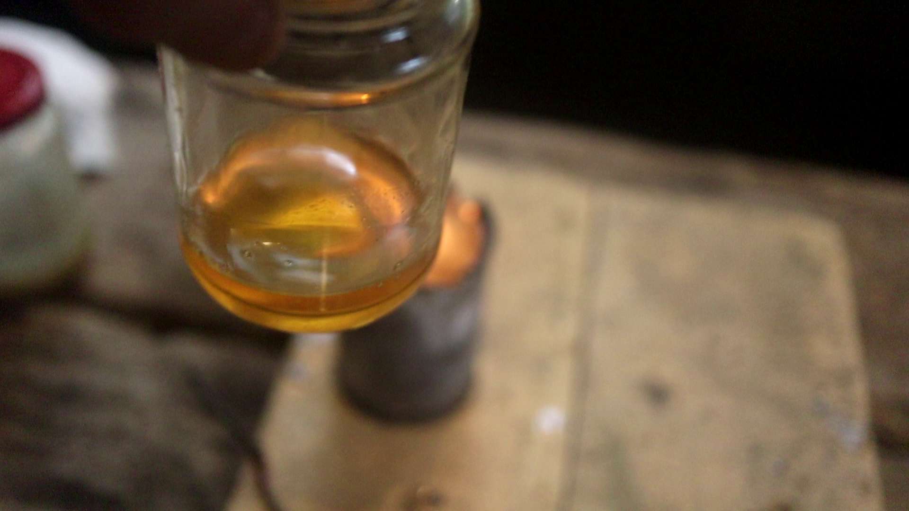As the boiling slows down, the liquid will start to darken. When it has more
or less stoped. The mixture can be removed from the heater. If a light Varnish is desired.
The longer it is left on heat, the darker it gets.
Now this process has boiled of much of the turpentine. So add a dash(~1/8) back in while
the Varnish is still warm. When the Varnish has cooled give it a good stirr, and it's ready
to use. If it feels to thick, add some turpentine. If it takes more than 4-5days to dry
properly, there was too much linseed-oil. If it dries flaky, ther was not enough.
If there are matte spots showing as it dries, there was still some water remaining.
Following this procedure, you will get a Varnish, that usually dries in 3-4days.
It has a smooth feel, but will require many coats for a high gloss. As well as a
good round on the buffing wheel.
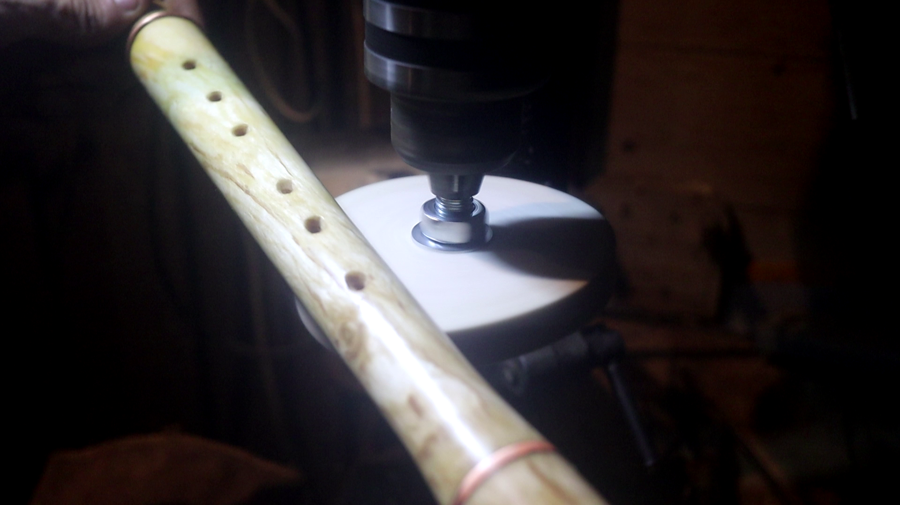Now addition of copper oxide, does reduce drying time. But it may also leave a green
tint to the Varnish. You may also experiment with other solvents, toluene, EtoH etc
On this I will have to do more experiments. Ideally achiving
two coats a day, with predictable results.